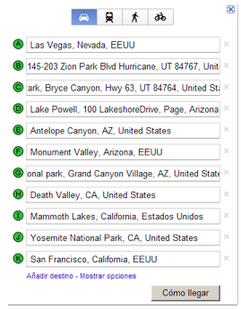
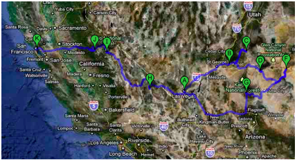

USA - Parques Nacionales 1
Salida un sábado por la mañana, regreso un sábado para llegar aquí el domingo (16 dias 14 noches o sea 2 semanas completas y un fin de semana).
• Día 01 Vuelo a Las Vegas.
- Llegada al hotel
- Alquiler del coche
- Paseo por el strip y algún casino.
⇨ Ya que no disfrutaremos Las vegas esa noche por estar cansados y por llegar tarde y como es un sábado que es cuando es mas caro los hoteles quizás se podría pensar en dormir a las afueras en algún motel
• Día 02 Zion National Park (3h de coche)
- Aprovechando el jet lag nos levantamos pronto y accedemos a este parque para realizar alguno de sus multiples trekkings
⇨ Weeping Rock, Emerald Pools, Angels Landing, The Narrows, etc
⇨ Dormir en un motel o en _http://www.cliffroselodge.com/_
• Día 03 Zion y Bryce Canyon (2h de coche)
- Por la mañana realizamos alguna excursión por Zion y luego nos desplazamos a Bryce para llegar antes de la puesta de Sol
⇨ Dormir por la zona
• Día 04 Bryce Canyon y Lago Powell (3h de coche)
- Con las pilas cargadas y no me refiero a nuestras piernas sino a nuestras cámaras veremos los ‘hoodoos’ y nos desplazaremos hasta el Lago Powell.
⇨ Dormir por la zona
• Día 05 Antelope Canyon (30 mins de coche)
- 3 tipos de excursiones el Upper, el Lower y el recorrido fotográfico
- Reservar con mucha antelación
- Según la reserva de Antelope Canyon también podríamos hacer un tour de rafting en el Río Colorado
⇨ Dormir en Page
• Día 06 Monument Valley y Gran Canyon (2,5h de coche y 3,5h de coche)
- Visitaremos Monument Valley en un tour con jeep de los indios navajos
- Por la tarde nos desplazaremos hasta la entrada Este del Gran Cañon para llegar a ver la puesta de Sol y sacar unas fotos increíbles.
⇨ Dormiremos en la entrada del parque para que no sea muy caro.
• Día 07 Gran Canyon
- Merece la pena pasar todo el día y realizar alguna excursión a pie.
- Opción es vuelo en helicóptero
⇨ Dormiremos en el mismo sitio
• Día 08 Ruta 66 y desierto de Nevada (8h de coche)
- Viajaremos un tramo de la Ruta 66 por el desierto de Nevada y llegaremos hasta la entrada de Death Valley
⇨ Dormiremos a la entrada del parque.
• Día 09 Death Valley y Mammoth Lakes (5h de coche)
- Estando a 100 metros bajo el nivel del mar si las temperaturas lo permiten podemos subir a Badlands o ver Badwater o incluso Devil´s Golf Course formado por depósitos de sal.
- Por la tarde conduciremos por Sierra Nevada hasta llegar a Mammoth Lakes (si la temperatura en Death Valley es insoportable podemos llevar alguna excursión preparada para Mammoth Lakes)
⇨ Dormir en Mammoth Lakes
• Día 10 Yosemite (2,5h de coche)
- Realizaremos la ruta por Lago Mono, Bodie Sate Park, paso Tioga y luego a mas de 3.00 metros llegamos a Yosemite. Si vamos con tiempo podemos entrar al parque y andar hasta la parte superior de Lembert Dome (3h) y disfrutar d elas vistas
⇨ Dormir dentro del parque en Curry Village que son unas cabañas rústicas y muy básicas (muy muy básicas pero con una ubicación inmejorable)
• Día 11 Yosemite
- Si se quiere subir a Half Dome la ruta es de 6-8h y hay que levantarse a las 6am
- Sino otra muy buena opción es conducir hasta Glacier Point uno d elos puntos panorámicos mejores del parque y realizar ahí un trekking más suave (Panorama Trail tarda 4 ‐6h, desnivel +200 m / ‐ 900m, 4 Mile Trail tarda 4-5h, desnivel - 900m o Sentinel Dome & Taft Point Loop tarda 4h, desnivel +- 200 m.)
- Por la tarde descansar o bien excursión en bici, rafting,…
- Por la noche hay excursiones para ver animales
⇨ Dormiremos en el parque
• Día 12 Yosemite y SF (4h de coche)
- Por la mañana podemos ver las Sequoias gigantes en el extremo sur del parque, tomar el tranvía de subida y realizar la bajada a pie.
- Por la tarde nos desplazaremos a SF
⇨ Dormir en SF
• Días 13 y 14 SF
- Visita d ela ciudad, alcatraz el golden Bridge, Sausalito, Union Square , Chinatown, Fisherman's Wharf , ……
⇨ Dormir en SF
• Día 15 Vuelta a la penosa realidad, España!
• Día 16 en casa.

